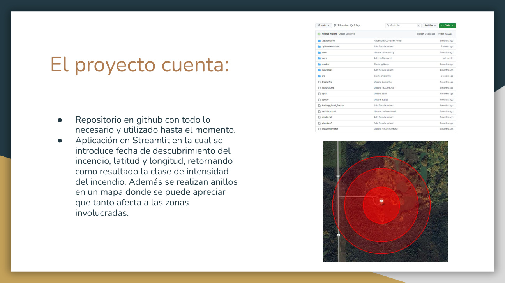
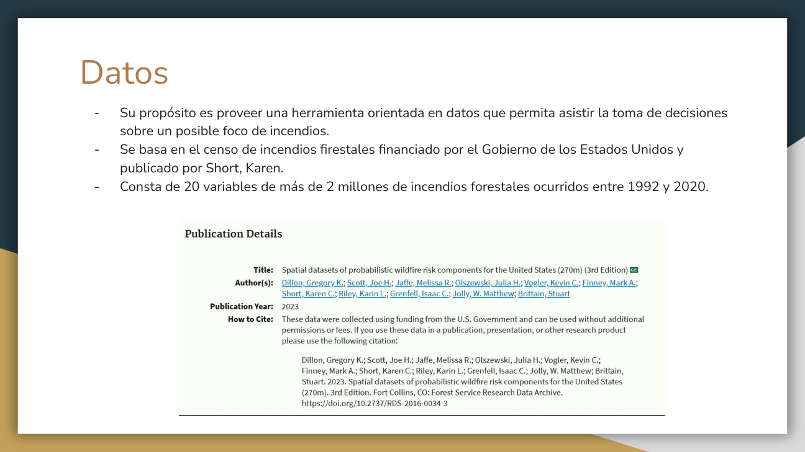
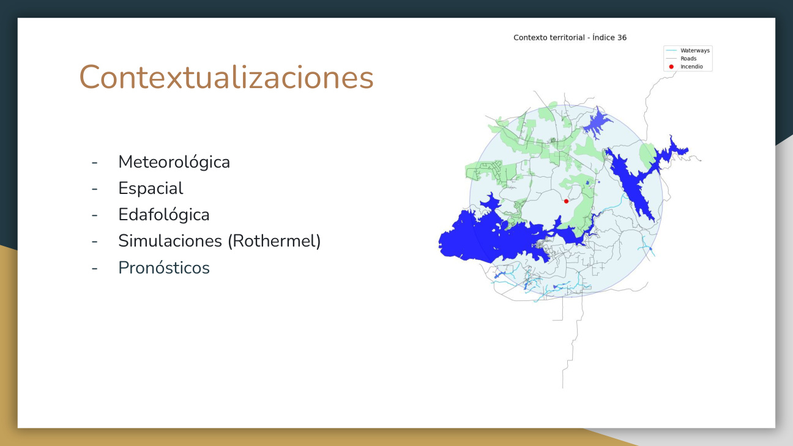
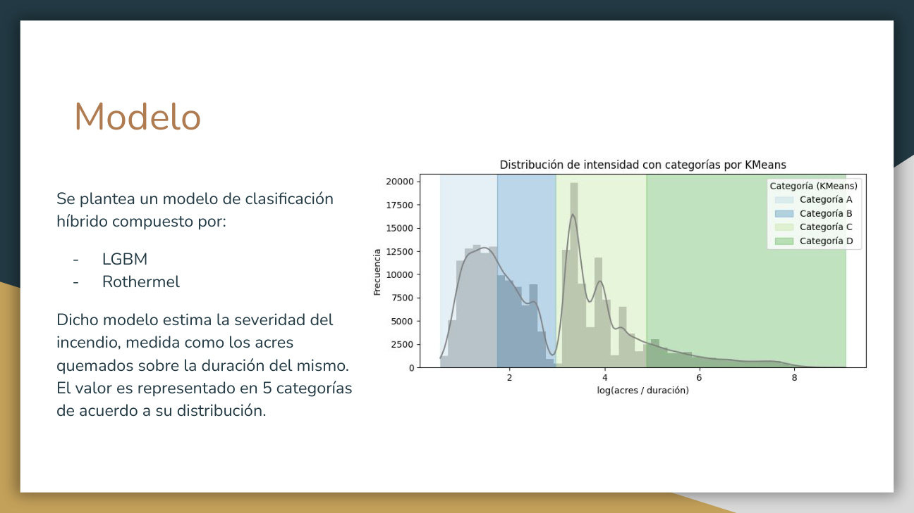
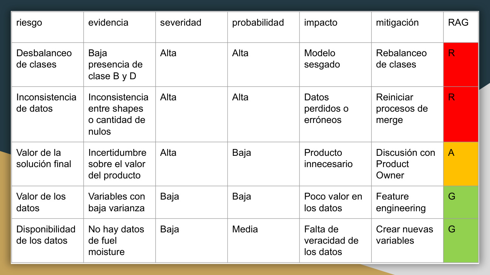

Forest Fire Containment: inferencia espacial para asistir decisiones
Proyecto orientado a construir una herramienta pública que estime severidad de incendios forestales
y ayude a contextualizar focos con datos meteorológicos, espaciales, edafológicos, simulaciones y
pronósticos. La transferencia técnica se pensó para alinear modelo, producto, riesgos y arquitectura.
2M+incendios históricos 1992-2020
20variables base del censo
5categorías de severidad
60%+objetivo inicial de precisión

Objetivo
Implementar una solución accesible para apoyar contención y prevención de incendios. El usuario
ingresa fecha de descubrimiento, latitud y longitud; la aplicación devuelve una clase de intensidad
y anillos de afectación sobre mapa.
Arquitectura de datos
Censo de incendios forestales de Estados Unidos como fuente histórica principal.
Google Earth Engine para variables geoespaciales y satelitales.
OpenStreetMap, OpenMeteo, Daymet y GridSoils para enriquecer contexto local.
MLflow para gestionar y monitorear el ciclo de vida del modelo.
Streamlit y Render para exponer el servicio como producto web.
Modelo
El enfoque combina un clasificador LightGBM con simulación inspirada en Rothermel. La severidad
se modela como acres quemados sobre duración del evento y se representa en cinco categorías de
acuerdo con su distribución.
Riesgos y próximos pasos
El equipo identificó riesgos sobre desbalanceo de clases, consistencia de merges, valor de datos
y disponibilidad de variables como fuel moisture. Las siguientes iteraciones apuntan a rediseñar
el target, evaluar XGBoost, fortalecer backend, mejorar simulador y asegurar reproducibilidad.
Láminas clave

Dataset base: más de dos millones de incendios ocurridos entre 1992 y 2020.

Capas de contexto: meteorología, espacio, suelo, simulaciones y pronósticos.

Modelo híbrido con LightGBM y Rothermel para estimar severidad.

Matriz RAG de riesgos, evidencia, impacto y mitigación.